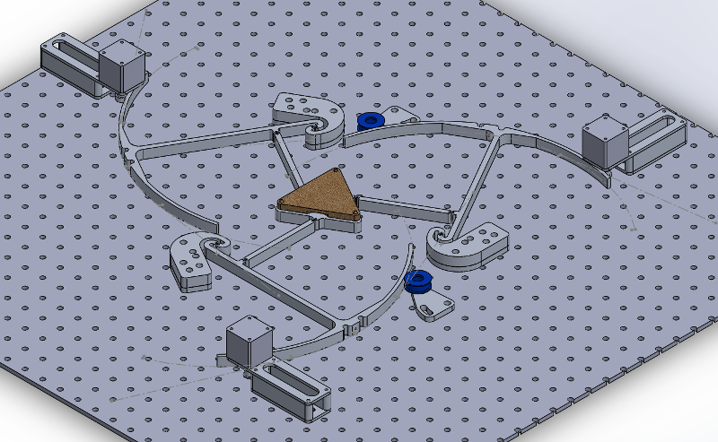
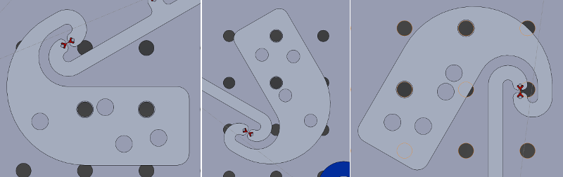
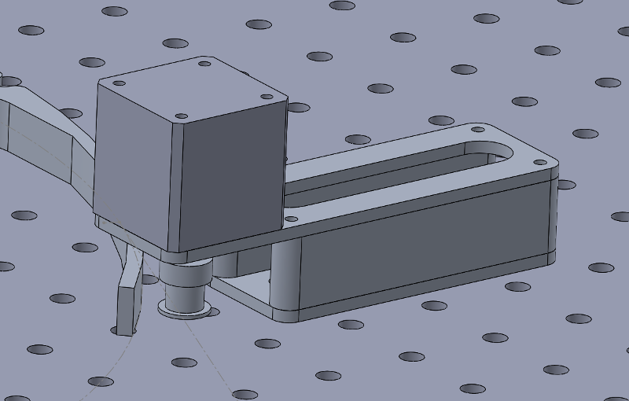
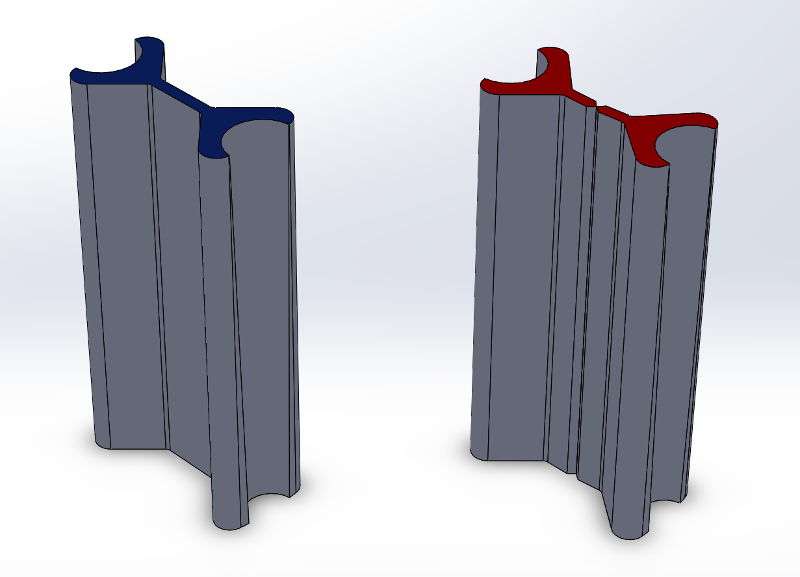
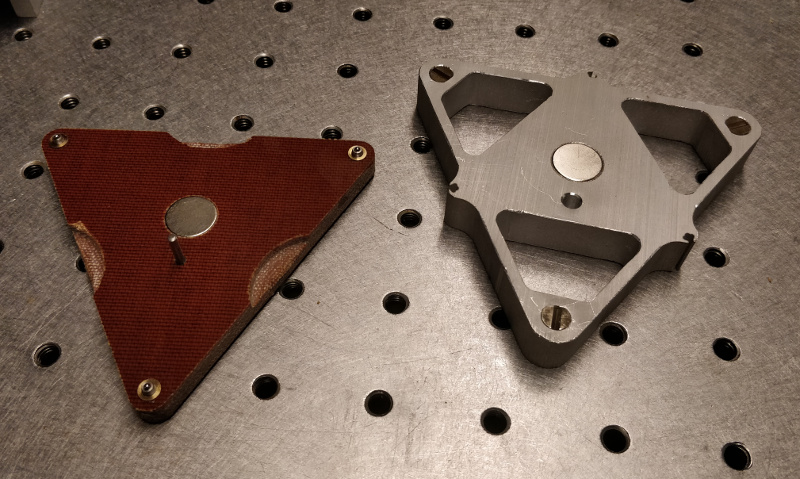
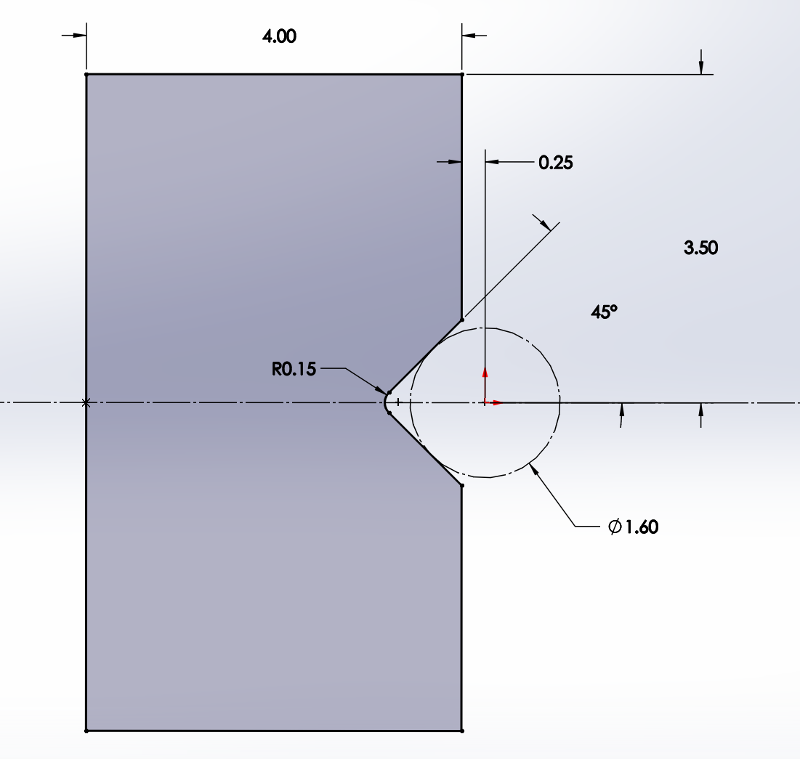
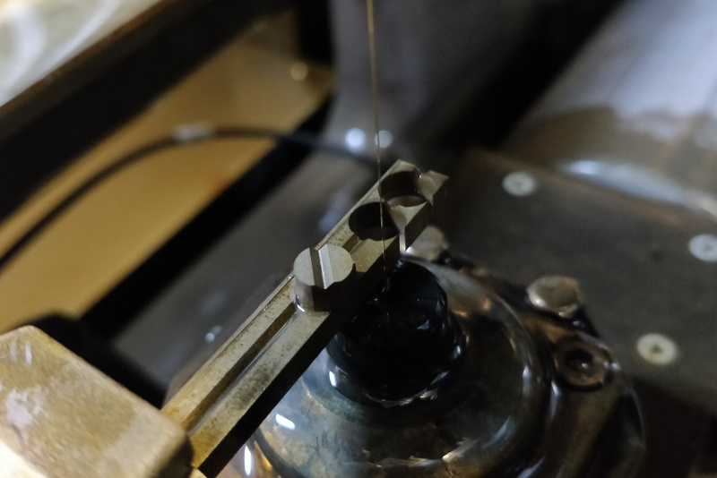
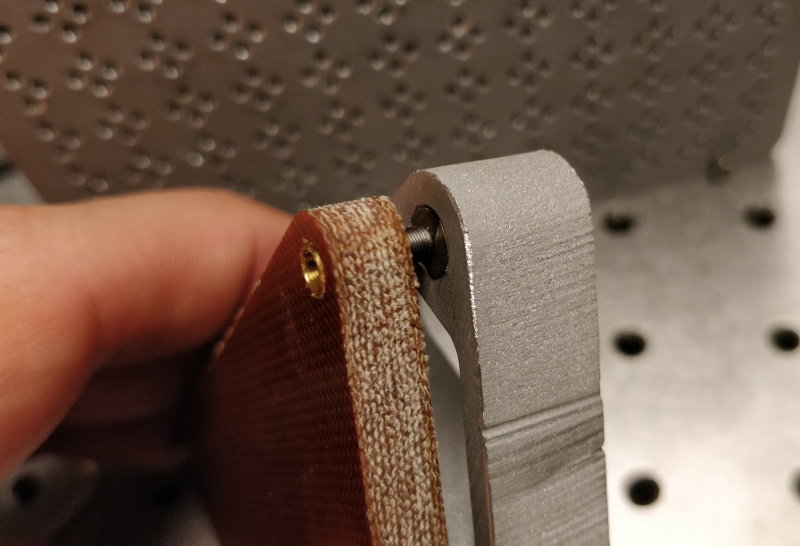

Superelastic Compliant Parallel Manipulator
I intend to use modular superelastic flexures to construct a compliant parallel manipulator. Some prior work exists with various caveats; in particular, this paper (which has agreeable licensing) closely matches my intent, but uses commercial linear actuators in place of the stepper-based rotary mechanisms I designed (and thus has distinct kinematics).
Actuator Hardware Updates
While the actuator test was never intended to be the basis for a machine design, I decided to re-use some of its parts to save on fabrication time and materials: the umbrellas, the idlers, and the linkage arms. I used Solidworks to exercise a simplified version of the design through its work area:After a bit more CAD-ing, the design started to congeal:

The anchors have a funky bolt pattern since they interface CPM-space with Cartesian optical-table-space in three different places. I added reference axes in the assembly to constrain the hole sketches, which then were used to extrude-cut the parts; since they're linked copies, each pair of holes carried over to the other two anchors. Doing it this way isn't particularly good for long-term project maintenance since it creates some awkward linking loops, but it does simplify fabrication:

The umbrella "handle" and matching anchor hook are a bit awkward, but being 1/2" aluminum plate they are plenty stiff for this low-force application. I decided upon this arrangement to keep the pivot flexure in tension as the belt tightens to avoid the chance of buckling (which probably wouldn't happen given flexure dimensions, but... oh well).
The original 3D-printed stepper motor mount from the actuator test wasn't great. Due to the motor cantilever, belt tension bent the mount a bit which probably contributed to difficulty in maintaining a tight mechanism. Poor motor current control probably didn't help. I happened upon some 3/4" aluminum scrap which made an ideal spacer, so I re-designed the mounts to be bolted together assemblies with an internal adjustment slot:

Putzing about with the kinematics of flexural mechanisms quickly becomes a time-consuming FEA exercise. As discussed previously, this flexure design doesn't try too hard to perfectly emulate a pin joint, so I can expect the instantaneous center of rotation to move a bit at high displacements. Even so, modeling the joints as nice hinges makes roughing in work area and clearances fast. To help this, I created a simulated version of the modular flexure with a rotary constraint in the center:

Note to future Zach: do not waste precious Nitinol fabricating these parts, they are for simulation only.
Stage and Work Surface
I intend to run a number of experiments using this test machine to validate its performance. Since I'll be mounting and re-mounting various test fixtures and materials on the stage, it is useful to include a removable work surface to avoid unnecessary stress on the flexural mechanism. At the same time, I'd also like to be able to precisely align the work plane to the machine's motion plane. Ideally the optical table and careful mounting practices will take care of most of this, but a machine that gets assembled with a hammer implies less-than-perfect nominal alignment.Since I'm designing around low-force processes, mashing microadjusters together with magnetic kinematic mounts keeps things repeatable, adjustable, and compact. The stage, like the linkages, is waterjet cut from 1/2" aluminum and fitted with a press-fit rare-earth magnet and an alignment socket. The work surface is milled phenolic with a matching magnet, an alignment pin, and a few finger cutouts for easier removal:

Kinematic mounts are lovely on paper but often frustrate in the real-world, since they depend on six point contacts that easily deform under significant load. Canoe spheres kick this can down the road quite a bit, but eventually most "serious" machines used precision ground mating surfaces. I tried to maximize stiffness of my design by wire-EDMing the mating "kinematic buttons" out of hardened 4140:

This actually ends up being two wire-EDM operations with a stock change and realignment step in the middle; in the examples below I rushed this part a bit, so the V-groove is somewhat off-center. That's okay, since we really only care about repeatability:

These buttons get press-fit into matching waterjetted D-shaped holes in the aluminum plate. Once the microadjusters are carefully glued into reamed holes in the phenolic, the assembly comes together nicely:

Assembly
As of this update, the parts are fabricated and messily deburred; the linkages are reamed; the flexures are pinned; the stage and work surface are finished; and the moving structure is assembled. I added quite conservative limit stops for the time being which I hope to expand once I find time to run more fatigue experiments:Next: motors, idlers, belts, Jake-boards, loop-closing, kinematics, testing, testing, testing.